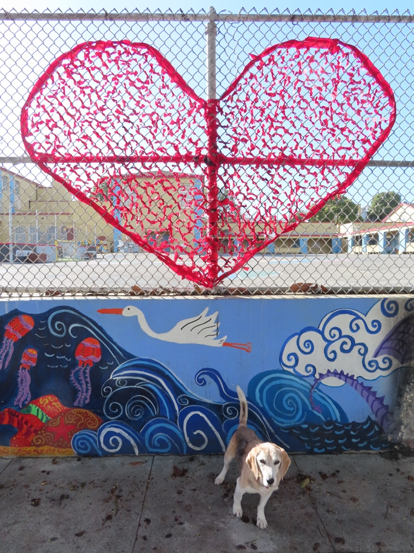

<--Previous Up Next-->

Behind the Horace Mann School, on the west side of Bartlett between 23rd and 24th. A good route to Sun Fat and the Indian market on 22nd Street during the pandemic, avoiding busy Valencia and Mission.
hearts Huxley Beagle sanfrancisco